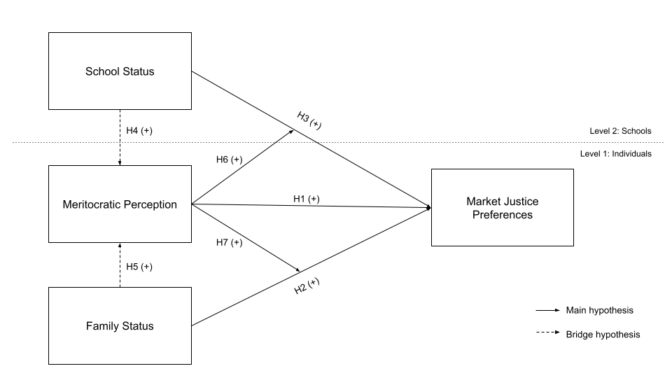
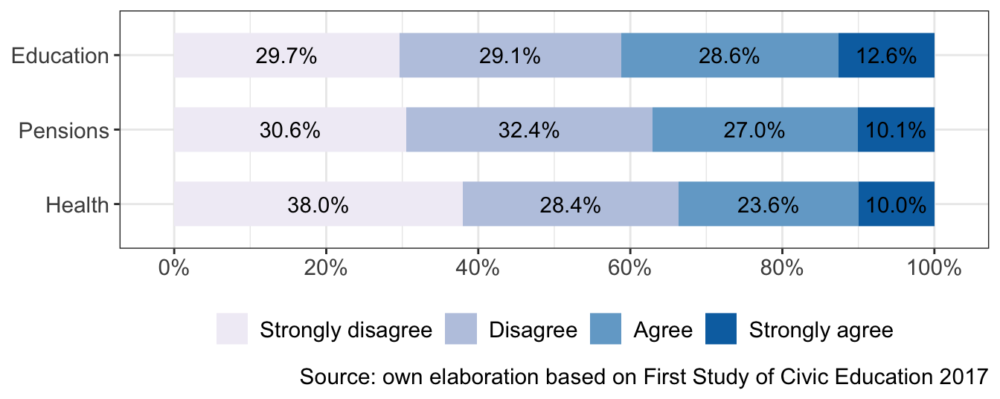
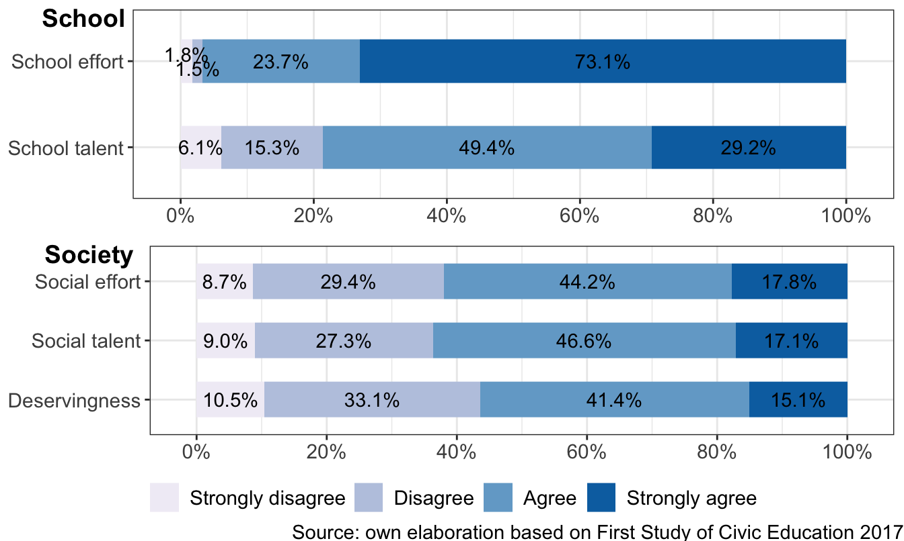

This document was last modified at 2024-06-21 18:22:00 and it was last rendered at 2024-06-21 18:22:00.
1 Introduction
<<<<<<< HEADSince its origins, educational institutions have been related to the idea of social mobility and access to better opportunities. Therefore, the consistent evidence of the high level of social reproduction at the school level represents a threat to the promise of education and a meritocratic system (Bourdieu & Passeron, 1990). A large part of the research in this field at an international level has addressed the extent to which the social origin of students affects their academic results and their life opportunities (Von Hippel & Hamrock, 2019), confirming that schools have severe difficulties in closing the socio-economic and cultural gaps of origin. Besides this socioeconomic perspective on school opportunities, recent research has addressed to what extent inequalities in the school context are also influencing students’ perceptions, beliefs, and attitudes: Are social inequalities even perceived at the school context? Are they rejected by the students, particularly those who are worst-off in socioeconomic terms? Or, Is there evidence at the school level that social inequalities are tolerated and even justified? (Batruch et al., 2022; Wiederkehr et al., 2015).
Given that the school environment has an important focus on performance, achievement and acknowledgment, meritocracy has been one of the principal concepts used for understanding and even for justifying performance differences among students. Meritocracy is a distributive system based on the belief that people should be rewarded and promoted based on their abilities, knowledge, and achievements (Young, 1958). It is often seen as a way to create equal opportunities and fairness, as individuals can rise to positions of power and influence based on their own merit rather than their background or connections. However, some argue that meritocracy can actually lead to tolerating or even justifying social inequalities, as it can create a hierarchy where those who already have resources and advantages are more likely to succeed (McNamee & Miller, 2004; Sandel, 2020). In this regard, a great deal of academic research about meritocracy delves into the assessment of to what extent rewards and privileges in society are related to merit, emphasizing the so-called unfulfillable promise of meritocracy (Mijs, 2016a).
In the present paper, we address the role of the perception of meritocracy on the justification of social inequalities by eighth-grade students in Chile, a country characterized by a highly stratified educational system. In particular, we focus in justifying inequalities in health, education and pensions, which are traditional social policy areas where access to better services could be justified based on payment capacity, referred as to market justice (Lane, 1986; Lindh & McCall, 2023). Most of the research in this realm has only considered adults, leaving aside the study of how beliefs in this field develop at student age as well as the impact of the school context and the family as the main socialization agencies (Batruch et al., 2022). Regarding schools, the way in which they deal with unequal conditions of origin has been linked to the hidden curriculum (Chafel, 1997), whereby students learn about distributive norms in society and mechanisms of justification of social differences.
Based on recent studies that relate school meritocracy to the justification of economic inequalities in the adult population (Batruch et al., 2022; Wiederkehr et al., 2015), the central hypothesis guiding this research is that school-age students with a higher perception of meritocracy - both at school and at the societal level - will show a larger justification of social inequalities, as individual achievement would be seen as appropriately rewarded and social mechanisms for correcting inequalities as less necessary (Batruch et al., 2022). We focus on the student-age population as we point out that it is possible to track down the origin of meritocratic beliefs (and their consequences) to early socialization processes. To this regard, we take into account the family and the school as two main socialization agencies that play a significant role in the socialization of cultural beliefs by transmitting cultural norms, values, and expectations to young people.
The Chilean case is particularly intriguing for studying market justice preferences. This country is characterized by acute and persistent economic inequality, which stands out in Latin America and among OECD countries (Flores et al., 2020). In Chile, the poorest 50% captures only 10% of the total income and has negative wealth, while the richest 1% receives almost 27% of the income and holds 49.6% of the wealth (Chancel et al., 2022). Much of this inequality has been attributed to the deep neoliberal reforms that institutionalized privatization and commodification of various economic sectors. Such reforms where introduced during the dictatorship (1973-1989) and expanded in democracy through concessions, demand credits, and specific regulatory frameworks (Ffrench-Davis, 2018). This shift in economic policy has allowed the unprecedented emergence of markets in areas related to social reproduction, such as health, pensions, and education, with provision and access managed by private entities and segmented by individual payment capacity, heavily reliant on State subsidies (Boccardo, 2020). In health, although the majority of the population uses the public insurance system (78.9%), the pension system is based on individual capitalization, with mandatory contributions managed by private administrators investing in the financial market, currently involving 11 million contributors (Superintendencia de Pensiones, 2024). In education, 30.6% of school enrollment is in public schools, 54.0% in state-subsidized (voucher) private schools, and 9.3% in fully private schools, generally attracting higher-income groups (Mineduc, 2023).
1.1 Justification of inequality and market justice
The justification of social inequality based on market-type criteria has been conceptualized as the individuals’ adherence to the deservingness of social goods and services (such as health, education, and pensions) based on prices and individuals’ ability to pay (Boltanski & Chiapello, 2005; Lane, 1986; Streeck, 2012). Research on social stratification beliefs, which explore individual perceptions of who deserves what and why (Kluegel & Smith, 1987), highlights that people’s explanations and justifications of social inequality are closely tied to their judgments of deservingness. The influence of ideologies (Wegener & Liebig, 1995) and cultural schemas (Homan et al., 2017) is pivotal in shaping these explanations by offering symbolic representations that frame societal structures and expectations. While significant attention has been paid to wage inequality, income distribution, and payment differentials in the literature [Castillo (2011); Evans et al., 2010; Jasso (1999); Shariff et al. (2016)], there has been less examination of public beliefs about which life domains should be governed by market relations and even less about children’s acceptance or rejection of these market principles. This oversight is notable given the extensive encroachment of market logic into public goods, welfare policy, and social services over the past five decades (Centeno & Cohen, 2012; Harvey, 2015), affecting areas such as pensions, health services, and education.
There are substantial differences in funding and delivery methods in the management of social services across nations (Jensen, 2008; Stoy, 2014). Nordic countries, for example, predominantly employ public agencies to produce and provide social services, funding these through collective taxation and offering them in kind to the majority of citizens. This system prioritizes social justice, placing it above market mechanisms in accessing services. In contrast, other countries rely more heavily on for-profit entities and private funding, where service distribution depends mainly on individual financial capacity to pay user fees, highlighting the influence of market justice in service allocation. The trend toward marketization of welfare services has been growing since the 1980s (Salamon, 1993), and this shift is increasingly evident even in countries where market solutions have traditionally had a minor role in social policy (Sivesind, 2017). The expansion of marketization has been related to a larger justification of market mechanisms, whereby societies with larger private spending on services show larger market justice preferences (Lindh, 2015).
Robert E. Lane proposed the underpinnings of the concept of market justice, which he differentiated from political justice. For him, “it is the genius of the market to stimulate wants without at the same time stimulating a sense of deserving more than one gets” (1986, p. 384). Contrary to the evidence that unequal distribution produces feelings of dissatisfaction, anger, and resentment that might motivate forms of collective action (Greitemeyer & Sagioglou, 2016; Mishra & Carleton, 2015; Séamus A. Power, 2018; Séamus A. Power et al., 2020; Smith et al., 2012), Lane pointed out that in market settings, social comparisons are more likely to motivate increased effort rather than feelings of acute injustice because individuals attribute outcomes to their actions. In this sense, unequal levels of well-being would be, to some extent, a function of their talents and efforts, instead of being based on distributive principles that characterize welfare states, such as need and equality (see Wilson 2003).
Despite high-income inequality and limited social mobility in Chile, and in Latin America in general, there is a prevalent belief that individuals are solely responsible for their economic outcomes, a view that varies across the region (Bucca, 2016; Chong & Ñopo, 2008; Salgado & Castillo, 2023; Torche, 2014). The reliance on private welfare providers and widespread user fees (Molyneux, 2008) adds complexity to this context, as reflected in surveys conducted by the Center for Public Studies (CEP). According to this data, 35.9% prefer private health insurance, and 63% would prefer private education. Yet, research on children’s justification in this area remains limited, highlighting a significant gap in understanding how younger generations view market-based access to welfare and whether these views are associated with their meritocratic beliefs.
=======Since its origins, educational institutions have been related to the idea of social mobility and access to better opportunities. Despite this, the consistent evidence of the high level of social reproduction at the school level represents a threat to the promise of education and a meritocratic system (Bourdieu & Passeron, 1990). A large part of the research in this field at an international level has addressed the extent to which the social origin of students affects their academic results and their life opportunities (Von Hippel & Hamrock, 2019), confirming that schools have severe difficulties in closing the socio-economic and cultural gaps of origin. Besides this socioeconomic perspective on school opportunities, recent research has addressed to what extent inequalities in the school context are also influencing students’ perceptions, beliefs, and attitudes: Are social inequalities even perceived at the school context? Are they rejected by the students, particularly those who are worst-off in socioeconomic terms? Or, Is there evidence at the school level that social inequalities are tolerated and even justified? (Batruch et al., 2022; Wiederkehr et al., 2015).
Given that the school environment has an important focus on performance, achievement and acknowledgment, meritocracy has been one of the principal concepts used for understanding and even for justifying performance differences among students. Meritocracy is a distributive system based on the belief that people should be rewarded and promoted based on their abilities, knowledge, and achievements (Young, 1958). It is often seen as a way to create equal opportunities and fairness, as individuals can rise to positions of power and influence based on their own merit rather than their background or connections. However, some argue that meritocracy can actually lead to tolerating or even justifying social inequalities, as it can create a hierarchy where those who already have resources and advantages are more likely to succeed (McNamee & Miller, 2004; Sandel, 2020). In this regard, a great deal of academic research about meritocracy delves into the assessment of to what extent rewards and privileges in society are related to merit, emphasizing the so-called unfulfillable promise of meritocracy (Mijs, 2016a).
In the present paper, we address the role of the perception of meritocracy on the justification of social inequalities by eighth-grade students in Chile, a country characterized by a highly stratified educational system. In particular, we focus in justifying inequalities in health, education and pensions, which are traditional social policy areas where acces to better services could be justified based on payment capacity, referred as to market justice Lindh & McCall (2023). Most of the research in this realm has only considered adults, leaving aside the study of how beliefs in this field develop at student age as well as the impact of the school context and the family as the main socialization agencies (Batruch et al., 2022). Regarding schools, the way in which they deal with unequal conditions of origin has been linked to the hidden curriculum (Chafel, 1997), whereby students learn about distributive norms in society and mechanisms of justification of social differences.
Based on recent studies that relate school meritocracy to the justification of economic inequalities in the adult population (Batruch et al., 2022; Wiederkehr et al., 2015), the central hypothesis guiding this research is that school-age students with a higher perception of meritocracy - both at school and at the societal level - will show a larger market justice preferences, as individual achievement would be seen as appropriately rewarded and social mechanisms for correcting inequalities as less necessary (Batruch et al., 2022). We focus on the student-age population as we point out that it is possible to track down the origin of meritocratic beliefs (and their consequences) to early socialization processes. To this regard, we take into account the family and the school as two main socialization agencies that play a significant role in the socialization of cultural beliefs by transmitting cultural norms, values, and expectations to young people.
The Chilean case is particularly intriguing for studying market justice preferences. This country is characterized by acute and persistent economic inequality, which stands out in Latin America and among OECD countries (Flores et al., 2020). In Chile, the poorest 50% captures only 10% of the total income and has negative wealth, while the richest 1% receives almost 27% of the income and holds 49.6% of the wealth (Chancel et al., 2022). Much of this inequality has been attributed to the deep neoliberal reforms that institutionalized privatization and commodification of various economic sectors. Such reforms where introduced during the dictatorship (1973-1989) and expanded in democracy through concessions, demand credits, and specific regulatory frameworks (Ffrench-Davis, 2018). This shift in economic policy has allowed the unprecedented emergence of markets in areas related to social reproduction, such as health, pensions, and education, with provision and access managed by private entities and segmented by individual payment capacity, heavily reliant on State subsidies (Boccardo, 2020). In health, although the majority of the population uses the public insurance system (78.9%), 15.3% are served by private insurers (Observatorio Social, 2023). The pension system is based on individual capitalization, with mandatory contributions managed by private administrators investing in the financial market, currently involving 11 million contributors (Superintendencia de Pensiones, 2024). In education, 30.6% of school enrollment is in public schools, 54.0% in state-subsidized (voucher) private schools, and 9.3% in fully private schools, generally attracting higher-income groups (Ministerio de Educación, 2023).
1.1 Justification of inequality and market justice
The justification of social inequality based on market-type criteria has been conceptualized as the individuals’ adherence to the deservingness of social goods and services (such as health, education, and pensions) based on prices and individuals’ ability to pay (Boltanski & Chiapello, 2005; Lane, 1986; Streeck, 2012). Research on social stratification beliefs, which explore individual perceptions of who deserves what and why (Kluegel & Smith, 1987), highlights that people’s explanations and justifications of social inequality are closely tied to their judgments of deservingness. The influence of ideologies (Wegener & Liebig, 1995) and cultural schemas (homan_being_2017?) is pivotal in shaping these explanations by offering symbolic representations that frame societal structures and expectations. While significant attention has been paid to wage inequality, income distribution, and payment differentials in the literature [Castillo (2011); Evans et al., 2010; Jasso (1999) ; Shariff et al. (2016)], there has been less examination of public beliefs about which life domains should be governed by market relations (Lindh & McCall, 2023) and even less about children’s acceptance or rejection of these market principles. This oversight is notable given the extensive encroachment of market logic into public goods, welfare policy, and social services over the past five decades (Centeno & Cohen, 2012; Harvey, 2015), affecting areas such as pensions, health services, and education.
There are substantial differences in funding and delivery methods in the management of social services across nations (Jensen, 2008; Stoy, 2014). Nordic countries, for example, predominantly employ public agencies to produce and provide social services, funding these through collective taxation and offering them in kind to the majority of citizens. This system prioritizes social justice, placing it above market mechanisms in accessing services. In contrast, other countries rely more heavily on for-profit entities and private funding, where service distribution depends mainly on individual financial capacity to pay user fees, highlighting the influence of market justice in service allocation. The trend toward marketization of welfare services has been growing since the 1980s (Salamon, 1993), and this shift is increasingly evident even in countries where market solutions have traditionally had a minor role in social policy (Sivesind, 2017). The expansion of marketization has been related to a larger justification of market mechanisms, whereby societies with larger private spending on services show larger market justice preferences (Lindh, 2015).
Robert E. Lane proposed the underpinnings of the concept of market justice, which he differentiated from political justice. For him, “it is the genius of the market to stimulate wants without at the same time stimulating a sense of deserving more than one gets” (1986, p. 384). Contrary to the evidence that unequal distribution produces feelings of dissatisfaction, anger, and resentment that might motivate forms of collective action (Greitemeyer & Sagioglou, 2016; Mishra & Carleton, 2015; Power, 2018; Smith et al., 2012), Lane pointed out that in market settings, social comparisons are more likely to motivate increased effort rather than feelings of acute injustice because individuals attribute outcomes to their actions. In this sense, unequal levels of well-being would be, to some extent, a function of their talents and efforts, instead of being based on distributive principles that characterize welfare states, such as need and equality (see Wilson 2003).
Despite high-income inequality and limited social mobility in Chile, and in Latin America in general, there is a prevalent belief that individuals are solely responsible for their economic outcomes, a view that varies across the region (Bucca, 2016; Chong & Ñopo, 2008; Salgado & Castillo, 2023; Torche, 2014). The reliance on private welfare providers and widespread user fees (Molyneux, 2008) adds complexity to this context, as reflected in surveys conducted by the Center for Public Studies (CEP). According to this data, 35.9% prefer private health insurance, and 63% would prefer private education. Yet, research on children’s justification in this area remains limited, highlighting a significant gap in understanding how younger generations view market-based access to welfare and whether these views are associated with their meritocratic beliefs (Centro de Estudios Públicos, 2024).
>>>>>>> origin/main1.2 Meritocratic perceptions and market justice
The original definition of merit is a combination of effort and talent (Young, 1958), and a meritocracy is a distributive system where merit is the main criterion for allocating valuable goods and rewards. From a sociological perspective, meritocracy has been used in research on social mobility to characterize societies with low mobility that threaten the meritocratic ideal (Goldthorpe, 2003). More recently, sociology and social psychology research has attended to subjective aspects related to the support for meritocratic principles in different societies, such as beliefs in meritocracy (Castillo et al., 2023; Mijs, 2016b, 2019).
Meritocratic beliefs can cover two types of subjective processes: preferences and perceptions (Castillo et al., 2023). While meritocratic preferences refer to a justification of distribution based on merit criteria (effort and talent), the perception of meritocracy refers to how individuals view and understand the concept of meritocracy in their society (Castillo et al., 2019; Duru-Bellat & Tenret, 2012). The perception can vary greatly depending on individual experiences, as well as social, economic, and cultural background. Some people may see meritocracy as a fair and just system that allows anyone to succeed based on their abilities and hard work. In contrast, others may view it as a myth or a cover for existing power dynamics and inequality, serving to maintain and even reinforce inequality (Lampert, 2013; Mijs, 2019). Some studies have analyzed how those with greater privileges believe more in meritocracy (Reynolds & Chan 2014), how greater economic inequality increases meritocratic beliefs (Mijs, 2019), and how larger inequality decreases it (Morris et al., 2022).
A larger justification of meritocratic distribution has been related to less support for redistributive compensation systems (Frank et al., 2015), as individual achievement would be seen as rewarded and social policies as less necessary. Almås et al. (2020) found that in the US the highly educated accept inequality significantly more than the less educated because they perceive inequality as justifiable owing to differences in productivity (i.e., merit). Barr & Miller (2020) found that in unequal societies, the highly educated accept inequality more than the low educated. Conversely, individuals tend to support redistribution when they believe that the disadvantaged lack the opportunities to succeed (Evans & Kelley, 2018).
<<<<<<< HEADSchools contribute to institutionalizing and reproducing inequality by promoting values, norms, practices, and languages familiar to higher-class families because the dominant group’s culture shapes educational institutions (Bourdieu & Passeron, 1990). Middle- and upper-class students are better equipped to face academic challenges and are more familiar with academic expectations (Mikus et al., 2019). Such familiarity represents cultural capital in educational contexts because higher-status students come to school ready to meet these expectations and reap the benefits (Jack, 2016; Khan, 2011). Conversely, lower-status children lacking cultural capital must catch up while experiencing inequitable comparisons (Goudeau & Croizet, 2017). Additionally, academic achievement is treated as the outcome of dispositional factors (e.g., pupils’ efforts and talents or lack of them) rather than the result of differential access to critical resources. Due to the meritocratic frame schools encourage, both low- and high-status individuals tend to believe that success or failure is not due to the family background but rather to differences in efforts and talents (Darnon et al., 2018). In this sense, we believe that the perception of meritocracy can influence students’ judgments about market justice preferences, leading to our first hypothesis:
=======Schools contribute to institutionalizing and reproducing inequality by promoting values, norms, practices, and languages familiar to higher-class families because the dominant group’s culture shapes educational institutions (Bourdieu & Passeron, 1990). Middle- and upper-class students are better equipped to face academic challenges and are more familiar with academic expectations (mikus_children_2020?). Such familiarity represents cultural capital in educational contexts because higher-status students come to school ready to meet these expectations and reap the benefits (Jack, 2016; Khan, 2011). Conversely, lower-status children lacking cultural capital must catch up while experiencing inequitable comparisons (goudeau_hidden_2017?). Additionally, academic achievement is treated as the outcome of dispositional factors (e.g., pupils’ efforts and talents or lack of them) rather than the result of differential access to critical resources. Due to the meritocratic frame schools encourage, both low- and high-status individuals tend to believe that success or failure is not due to the family background but rather to differences in efforts and talents (Darnon et al., 2018). In this sense, we believe that the perception of meritocracy can influence students’ judgments about market justice preferences, leading to our first hypothesis:
>>>>>>> origin/main\(H_{1a}\): Students who perceive that there is more meritocracy in society will show larger market justice preferences
The perception of meritocracy has been mostly studied with general questions about reward allocation based on effort and talent (usually intelligence). Nevertheless, when looking at the school population it is possible to further consider the perception of meritocracy referred specifically to the school context. For instance, Resh (2010) find that perception of justice in grades has a positive effect on liberal democratic orientation, and trust in people and formal institutions (Resh & Sabbagh, 2014). Attending to this evidence, we differentiate in this study between meritocratic perception in society at large, and meritocratic perception at school, proposing the next hypothesis:
\(H_{1b}\): Students who perceive that there is more meritocracy at school will show larger market justice preferences
2 Data, variables and method
2.1 Data
The First Study of Civic Education in Chile, conducted by the Agency for Quality Education of the Ministry of Education in 2017, serves as the main data source. This database is composed by a civic knowledge test score and a series of items batteries measuring different aspects of citizenship. The target population includes 8th-grade students in 242 schools nationwide, as well as their parents and teachers. Initially, the database contains 8,589 student observations and 6,770 parent observations. To ensure higher data quality and considering the survey’s unit of analysis, we removed 171 student cases and 79 parent cases that exhibited repetitive and careless response patterns (Gottfried et al., 2022). Additionally, we utilized data from the System for Measuring the Quality of Education (SIMCE) conducted by the Ministry of Education in 2017, which provides school-level information such as administrative dependence, socioeconomic classification, and results obtained in standardized mathematics and language tests. After processing the variables and removing missing cases, the final database for this study includes a two-level stratified sample composed of 5,047 students and parents (level 1) nested within 231 schools (level 2).
2.2 Variables
Individual level
Market Justice Preferences: The dependent variables in this study are market justice preferences. This construct is measured through three variables that address the degree of justification regarding whether access to social services in pensions, education, and health should be income conditional. Justification of inequality in health is measured by the item: “Is it fair in Chile that people with higher incomes can access better healthcare than those with lower incomes?” The same question is asked for education and pensions. In all cases, respondents indicate their preferences on a Likert scale ranging from “completely disagree” (1) to “completely agree” (4). Additionally, we include a summarized indicator of “market justice preferences”, measured by an average index across these items (α = 0.86), with values ranging from 1 to 4, where higher values represent greater preferences for market justice (see Table 1). We analyzed these items independently as well as by the average index.
| Label | Stats / Values | Freqs (% of Valid) | Valid |
|---|---|---|---|
| It is just that in Chile people with higher incomes can have better pensions than people with low incomes | 1. Strongly disagree 2. Disagree 3. Agree 4. Strongly agree |
1837 (30.6%) 1945 (32.4%) 1622 (27.0%) 608 (10.1%) |
6012 (95.9%) |
| It is just that in Chile people who can pay have a better education for their children | 1. Strongly disagree 2. Disagree 3. Agree 4. Strongly agree |
1766 (29.7%) 1732 (29.1%) 1704 (28.6%) 750 (12.6%) |
5952 (94.9%) |
| It is just that in Chile people with higher incomes can access better health services than people with low incomes | 1. Strongly disagree 2. Disagree 3. Agree 4. Strongly agree |
2254 (38.0%) 1685 (28.4%) 1401 (23.6%) 593 (10.0%) |
5933 (94.6%) |
| Market Justice Preferences | Mean (sd) : 2.2 (0.9) min < med < max: 1 < 2 < 4 IQR (CV) : 1.7 (0.4) |
13 distinct values | 6077 (96.9%) |
Perception of Meritocracy: The main independent variable refers to the perception of meritocracy, operationalized through five items addressing the perception of rewards based on talent and intelligence at both the school and societal levels. At the school level, students respond to whether “Intelligence is important for getting good grades” and “Effort is important for getting good grades”. At the societal level, students respond to the following questions: “In Chile, people are rewarded for their effort”, “In Chile, people get what they deserve” and “In Chile, people are rewarded for their intelligence and skills”. Each item was answered on a four-point Likert scale ranging from “completely disagree” (1) to “completely agree” (4).
Family Socioeconomic Status: The socioeconomic status of students’ families is measured using two indicators. First, the highest educational level attained by the parents, with categories: “8th grade or less,” “Secondary education,” “Technical higher education,” “University or postgraduate,” and “No response.” The inclusion of the “No response” category is due to its high frequency in the data; omitting it could obscure relevant associations. Second, the number of books in the household is used, categorized as “Less than 25” and “More than 25.”
Table 2 shows the individual level variables used, their response categories and their frequencies.
| Label | Stats / Values | Freqs (% of Valid) | Valid |
|---|---|---|---|
| Intelligence is important to get good grades | 1. Strongly disagree 2. Disagree 3. Agree 4. Strongly agree |
367 ( 6.1%) 920 (15.3%) 2970 (49.4%) 1760 (29.3%) |
6017 (95.9%) |
| Effort is important to get good grades | 1. Strongly disagree 2. Disagree 3. Agree 4. Strongly agree |
109 ( 1.8%) 88 ( 1.5%) 1427 (23.7%) 4406 (73.1%) |
6030 (96.1%) |
| In Chile, people are rewarded for their intelligence and skill | 1. Strongly disagree 2. Disagree 3. Agree 4. Strongly agree |
517 ( 9.0%) 1568 (27.3%) 2673 (46.6%) 983 (17.1%) |
5741 (91.5%) |
| In Chile, people are rewarded for their efforts | 1. Strongly disagree 2. Disagree 3. Agree 4. Strongly agree |
512 ( 8.7%) 1733 (29.4%) 2607 (44.2%) 1050 (17.8%) |
5902 (94.1%) |
| In Chile, people get what they deserve | 1. Strongly disagree 2. Disagree 3. Agree 4. Strongly agree |
604 (10.5%) 1911 (33.1%) 2388 (41.4%) 871 (15.1%) |
5774 (92.1%) |
| Parental educational level | 1. 8th grade or less 2. Secondary Education 3. Higher tec. education 4. University or Postgraduat 5. Missing |
559 ( 8.9%) 1698 (27.1%) 960 (15.3%) 1080 (17.2%) 1975 (31.5%) |
6272 (100.0%) |
| Number of books at home | 1. Les than 25 2. More than 25 |
3920 (63.2%) 2281 (36.8%) |
6201 (98.9%) |
Contextual level
This study focuses on two school-level characteristics: socioeconomic status and academic performance. Socioeconomic status is assessed using the Ministry of Education’s classification, measured as an ordinal item with five categories ranging from “low” (1) to “high” (5). Academic performance is measured using the school’s results in the SIMCE (System of Measurement of Educational Quality) standardized tests, which are administered yearly at different educational levels in areas such as language and mathematics. These results are categorized as “low,” “medium,” and “high.” The contextual level items used, response categories, and their frequencies are detailed in Table 3.
| Label | Stats / Values | Freqs (% of Valid) | Valid |
|---|---|---|---|
| Socioeconomic level of school | 1. Low 2. Medium low 3. Medium 4. Medium high 5. High |
49 (21.1%) 92 (39.7%) 43 (18.5%) 29 (12.5%) 19 ( 8.2%) |
232 (100.0%) |
| SIMCE score achievement by school | 1. Low 2. Medium 3. High |
108 (46.6%) 69 (29.7%) 55 (23.7%) |
232 (100.0%) |
Controls
A series of control variables are included. At the individual level, an index of access to technology is constructed based on the number of computers, tablets, and cell phones in the household, as well as internet connectivity. At the contextual level, we use the administrative dependence of schools, classified as “Public,” “Subsidized Private,” or “Private,” and the proportion of parents with university or postgraduate education at each school.
2.3 Methods
Given the hierarchical structure of the data, with students nested within schools, model estimation is performed within a multilevel framework. These models are appropriate for capturing both individual and contextual effects in a single analysis, allowing for the estimation of fixed effects between groups and random effects that vary from one group to another (Bell et al., 2019; Hox et al., 2010). Cumulative link mixed models were employed for the ordinal dependent variables, while linear mixed-effects models were applied for the average market justice preference index.
The hypotheses of this research were pre-registered in the Open Science Framework platform of the Center for Open Science (OSF), the access to the document is available at this link. The statistical analysis for this research was conducted using the lme4 package in R version 4.1.3.
3 Results
3.1 Descriptive
Figure 2 illustrates the distribution of responses to the three items on market justice preferences (healthcare, pensions, and education), indicating that most respondents tend to disagree or strongly disagree with the idea that it is just for people with higher incomes to have access to better services in these areas. The strongest opposition is observed in the healthcare sector, as the majority of respondents (66.4%) are against the idea that higher-income individuals should have access to better healthcare services. Similarly, regarding the concept of justice related to access to better pensions based on income, the level of disagreement reaches 63.0%. This decreases significantly in the field of education, as the percentage of respondents who disagree or strongly disagree with those with higher incomes having access to better education decreases to 58.8%. Only a small proportion agree that access to healthcare should be conditional on income (23.6%), and a minority strongly agree (10%), as is the case with pensions. However, this increases in the case of education, being the area where there is a significant proportion of respondents who agree or strongly agree with access based on market justice (41.2%).
<<<<<<< HEADThis contrasts with the pattern observed for these items in the Chilean adult population (see ?@fig-elsoc). While both age groups tend to disagree that higher-income individuals should access better health, pension, and education services, this tendency is more pronounced in adults than in students, who show greater agreement with market justice preferences in these areas. Additionally, the hierarchy of these domains differs between groups; adults justify market justice least in education, followed by health, and then pensions, whereas students justify market principles less in health, then pensions, and lastly in education.
======= >>>>>>> origin/main

Regarding the perception of meritocracy, Figure 3 displays the frequency distribution of five items related to the dimensions of school and society. At the school level, there is a strong belief that both effort and talent are important for achieving good grades, with especially high agreement for effort. Specifically, while 78.6% agree or strongly agree on the importance of talent for obtaining good grades, this proportion rises to 96.8% for effort, indicating that respondents value effort more than talent in this context.

At the societal level, Figure 3 shows that a majority of respondents agree or strongly agree that individuals are rewarded for their talents (63.7%) and efforts (62%). Nevertheless, a notable proportion perceives that both effort and talent are not adequately rewarded in society, with 38.1% and 36.3% respectively. The perception of whether people get what they deserve in society is more divided; while a slim majority (56.5% combining agree and strongly agree) agrees, a significant minority (43.6%) disagrees, indicating that this is the most contentious item among respondents. There is general agreement that people are rewarded for talent and effort in society, but the consensus is weaker compared to school meritocracy.
Figure 4 shows a series of graphs depicting the association between the variables of market justice preferences - in education, health, and pensions - and the variables of meritocratic perception at school (effort and talent) and in society (effort, talent, and deservingness) (see conceptual diagram in Figure 1). On the left, we observe the social meritocracy diagrams, while on the right the school meritocracy diagrams are shown. For the three variables of perception of meritocracy in society the relationship is clear, since the average of market justice preferences increases the more there is agreement that people are rewarded for their effort, merit, and talent. This relationship needs to be clarified in the case of the variables of perception of meritocracy at school. To the extent that there is more agreement that the perception of talent is essential for obtaining good grades, the average of market justice preferences increases, but this relationship is not as clear as with the variables of meritocracy in society. In addition, the graph does not show a clear trend in the relationship between the perception that effort is essential to obtain good grades and market justice preferences.

3.2 Multivariate
This section presents the results of the multilevel models. We begin by showing the results of the cumulative link mixed models in Table 4 for the ordinal dependent variables of justice in health, pensions, and education separately, to determine if the effect of the predictors differs across these items. Then, we present the results of the linear mixed-effects models for the average index of preference for market justice in Table 51. For the health item, the intraclass correlation (ICC) obtained for the null model (not shown) indicates that 5% of the total variance of this item is associated with specific characteristics of the schools, while it is 3% for the pensions item and 4% for the education item (ICC based on (Hox et al., 2010, p. 15)). For the average index of market justice preferences, the ICC reaches 4%, indicating that overall, only a small percentage of the total variance in students’ market justice preferences is associated with school characteristics, thus limiting the possibility of finding effects at this second level of analysis.
<<<<<<< HEAD
=======
>>>>>>> origin/main
| Health | Pensions | Education | ||||
|---|---|---|---|---|---|---|
| Model 1 | Model 2 | Model 1 | Model 2 | Model 1 | Model 2 | |
| School talent | 0.23*** | 0.22*** | 0.17*** | 0.16*** | 0.25*** | 0.25*** |
| (0.03) | (0.03) | (0.03) | (0.03) | (0.03) | (0.03) | |
| School effort | -0.26*** | -0.26*** | -0.26*** | -0.25*** | -0.23*** | -0.23*** |
| (0.04) | (0.04) | (0.04) | (0.04) | (0.04) | (0.04) | |
| Social talent | 0.16*** | 0.16*** | 0.12** | 0.13** | 0.14** | 0.15*** |
| (0.05) | (0.05) | (0.04) | (0.04) | (0.04) | (0.04) | |
| Social effort | 0.11* | 0.11* | 0.27*** | 0.27*** | 0.15** | 0.15** |
| (0.05) | (0.05) | (0.05) | (0.05) | (0.05) | (0.05) | |
| Deservingness | 0.52*** | 0.51*** | 0.38*** | 0.37*** | 0.44*** | 0.43*** |
| (0.05) | (0.05) | (0.05) | (0.05) | (0.05) | (0.05) | |
| Parental education (Ref.= Non-university) | ||||||
| University or posgraduate | 0.05 | 0.08 | 0.14 | 0.12 | 0.09 | 0.07 |
| (0.08) | (0.08) | (0.08) | (0.08) | (0.08) | (0.08) | |
| Missing | 0.10 | 0.11 | 0.12* | 0.11 | 0.13* | 0.12* |
| (0.06) | (0.06) | (0.06) | (0.06) | (0.06) | (0.06) | |
| More than 25 books (Ref.= Less than 25) | -0.16** | -0.13* | -0.13* | -0.13* | -0.07 | -0.07 |
| (0.06) | (0.06) | (0.06) | (0.06) | (0.06) | (0.06) | |
| Socioeconomic level (Ref.= Low) | ||||||
| SES Medium | 0.08 | 0.02 | 0.08 | |||
| (0.10) | (0.10) | (0.10) | ||||
| SES High | 0.71* | 0.72** | 0.93*** | |||
| (0.28) | (0.26) | (0.28) | ||||
| Achievement score (Ref.= Low) | ||||||
| Simce Medium | -0.29*** | -0.19* | -0.16* | |||
| (0.08) | (0.08) | (0.08) | ||||
| Simce High | -0.56*** | -0.53*** | -0.46*** | |||
| (0.10) | (0.09) | (0.10) | ||||
| Controls | Yes | Yes | Yes | Yes | Yes | Yes |
| BIC | 12747.58 | 12761.47 | 13103.81 | 13112.87 | 13329.33 | 13352.18 |
| Num. obs. | 5144 | 5144 | 5177 | 5177 | 5159 | 5159 |
| Groups (mrbd) | 231 | 231 | 232 | 232 | 231 | 231 |
| Variance: mrbd: (Intercept) | 0.11 | 0.05 | 0.09 | 0.04 | 0.10 | 0.05 |
| Note: Cells contain regression coefficients with standard errors in parentheses. Control variables are included. ***p < 0.001; **p < 0.01; *p < 0.05. Source: own elaboration based on First Study of Civic Education 2017. | ||||||
Model 1 in Table 4 for the three dependent variables of justice in differential access to health, pensions, and education demonstrates a similar trend regarding the effect of the perception of meritocracy on these items, with all effects being statistically significant (p < 0.05). Regarding the variables of social meritocracy, the three variables—talent, effort, and deservingness—show that as these increase, the justification for differentiated access to pensions, education, and health also increases. In the context of school meritocracy, the effects are mixed: as perceived school talent increases, the justification for differentiated access to these services increases; conversely, as perceived school effort increases, the justification decreases, holding all other variables constant.
Additionally, Model 1 examines family status through parents’ educational level and the number of books at home. For health, pensions, and education, a negative but statistically non-significant association with parents’ education is observed. However, having more than 25 books at home shows a negative and statistically significant effect on market justice in health and pensions, suggesting less justification for differentiated access compared to those with fewer books. This effect is not seen in education.
Model 2 in Table 4 incorporates school-level variables. The results show that high socioeconomic level schools show greater preferences for market justice in health, pensions, and education compared to low socioeconomic level schools, with statistically significant results (p < 0.05). Moreover, the findings suggest that schools with higher academic performance shows negative and statistically significant effects across all three items, suggesting these schools justify market allocation principles less.
| Model 1 | Model 2 | Model 3 | Model 4 | |
|---|---|---|---|---|
| Constant | 1.31*** | 1.30*** | 1.36*** | 1.39*** |
| (0.09) | (0.10) | (0.10) | (0.10) | |
| School talent | 0.11*** | 0.11*** | 0.10*** | 0.10*** |
| (0.01) | (0.01) | (0.01) | (0.01) | |
| School effort | -0.12*** | -0.12*** | -0.12*** | -0.12*** |
| (0.02) | (0.02) | (0.02) | (0.02) | |
| Social talent | 0.07*** | 0.07*** | 0.07*** | 0.07*** |
| (0.02) | (0.02) | (0.02) | (0.02) | |
| Social effort | 0.08*** | 0.08*** | 0.08*** | 0.08*** |
| (0.02) | (0.02) | (0.02) | (0.02) | |
| Deservingness | 0.20*** | 0.20*** | 0.20*** | 0.20*** |
| (0.02) | (0.02) | (0.02) | (0.02) | |
| Parental education (Ref.= Non-university) | ||||
| University or posgraduate | 0.05 | 0.05 | 0.05 | |
| (0.03) | (0.04) | (0.04) | ||
| Missing | 0.06* | 0.06* | 0.06* | |
| (0.03) | (0.03) | (0.03) | ||
| More than 25 books (Ref.= Less than 25) | -0.05 | -0.05 | -0.04 | |
| (0.03) | (0.03) | (0.03) | ||
| Socioeconomic level (Ref.= Low) | ||||
| SES Medium | -0.01 | 0.01 | ||
| (0.05) | (0.05) | |||
| SES High | 0.31* | 0.37** | ||
| (0.14) | (0.13) | |||
| Achievement score (Ref.= Low) | ||||
| Simce Medium | -0.11** | |||
| (0.04) | ||||
| Simce High | -0.26*** | |||
| (0.04) | ||||
| Controls | Yes | Yes | Yes | Yes |
| Deviance | 12368.01 | 12359.40 | 12344.10 | 12310.90 |
| Deviance Test (p) | 0.00 | 0.00 | 0.00 | 0.00 |
| BIC | 12517.46 | 12550.41 | 12595.11 | 12589.48 |
| Num. obs. | 5047 | 5047 | 5047 | 5047 |
| Num. groups: mrbd | 231 | 231 | 231 | 231 |
| Var: mrbd (Intercept) | 0.02 | 0.02 | 0.02 | 0.01 |
| Var: Residual | 0.66 | 0.66 | 0.67 | 0.66 |
| Note: Cells contain regression coefficients with standard errors in parentheses. Control variables are included. ***p < 0.001; **p < 0.01; *p < 0.05. Source: own elaboration based on First Study of Civic Education 2017. | ||||
Table 5 presents the results of linear mixed-effects models for the market justice preference index. Model 1 shows that higher perceived societal meritocracy, through effort, talent, and deservingness, is positively and significantly associated with market justice preferences. School meritocracy perceptions yield mixed effects: perceived talent increases market justice preference, while perceived effort decreases it, both statistically significant (p < 0.001). Model 2 includes family status, finding no statistically significant effects from parents’ education or the number of books at home, showing positive direction for university or posgraduate, and negative direction for books at home.
Regarding school characteristics, Models 3 and 4 introduce socioeconomic level and academic performance. The results of Model 3 suggest statistically significant relationship between school socioeconomic levels and market justice preferences, specifically those school with high socieconomic level (\(\beta\) = 0.37) compared to low socioeconomic level. However, Model 4 indicates that schools with medium (\(\beta\) = -0.11) and high (\(\beta\) = -0.26) academic performance have lower market justice preferences compared to low-performing schools, with these effects being statistically significant when controlling for other variables.
| Variable | School talent | School effort | Social talent | Social effort | Deservingness |
|---|---|---|---|---|---|
| University or Postgraduate | -0.034 | -0.012 | -0.073. | -0.079* | -0.118** |
| More than 25 books | -0.015 | -0.046 | -0.029 | -0.081** | -0.035 |
| School SES high | 0.004 | 0.001 | -0.057. | -0.063* | -0.08** |
| Simce Medium | 0.001 | 0.032 | -0.037 | -0.041 | -0.082* |
| Simce High | -0.016 | 0.008 | -0.043 | -0.063. | -0.087* |
| Note: ***p < 0.001, **p < 0.01, *p < 0.05. Source: own elaboration based on First Study of Civic Education 2017. |
Table 6 displays the interaction terms related to our hypothesis. The results suggest that students’ family background moderates the relationship between their meritocratic perceptions and their justification of market allocation in social services. Specifically, the relationship between social effort and market justice preferences is less positive for students whose parents have university or postgraduate education. Lower-status students (measured by parental education) prefer more market justice when they strongly adhere to meritocratic perceptions of deservingness. A similar moderating effect is seen with family cultural capital: the relationship between effort and market justice preferences is less positive for students with more than 25 books at home.
At the school level, we observe that school status and students’ meritocratic beliefs moderate their preferences for market justice. High-status schools show less preference for market justice when their students, on average, have a greater perception of meritocracy, as measured by effort, deservingness, and talent. Conversely, low-achieving schools prefer more market justice when their students have stronger meritocratic beliefs. Figure 5 illustrates this moderating effect of school achievement on the relationship between deservingness and market justice. No moderating effects were observed at the school level for students’ meritocratic beliefs regarding effort or talent in achieving good grades.

4 Discussion
The previous analyses aimed to explore the relationship between perceptions of meritocracy and preferences for market justice among students in Chilean society. Several models estimated how students’ beliefs about the rewards for talent and effort in both societal and school contexts influence their attitudes toward access to social services like health, education, and pensions based on pay capacity. Additionally, the models examined the impact of students’ socioeconomic status and school achievement on these preferences, assessing whether perceptions of meritocracy moderate these effects. The findings offer insights into the complex interplay between meritocratic beliefs, socioeconomic factors, and attitudes toward market justice criteria.
Hypothesis \(H_{1a}\) posited that students who perceive greater meritocracy in society would show stronger preferences for market justice. The results support this hypothesis, indicating a positive relationship between the perception that talent and effort are rewarded in society and the preferences for market justice in access to services such as health, education, and pensions. This finding aligns with previous research suggesting that individuals who believe in a meritocratic system are more likely to justify social inequalities (Batruch et al., 2022; Wiederkehr et al., 2015). It is noteworthy that among the items measuring meritocratic perception, consistently the one about deservingness shows a larger effect when compared to the ones about talent and effort. Although the three items correlate, there is something distinctive about deservingness that probably encompasses other aspects beyond meritocracy, an aspect to which we will come back in the conclusions. Moving now to hypothesis \(H_{1b}\), this is simply a variation of 1a, replacing the perception of meritocracy at society by the one at school. In this case we have only two items of meritocratic perception - unfortunately deservingness was not measured at school level - and the direction of the effects is not as straightforward as in the case of societal meritocracy in \(H_{1a}\): positive for talent, but negative for effort. Still, one of the limitation for the comparison between perception of meritocracy and society is the difference of the items’ phrasing. Whereas for society the item refers to the extent to to which efforts are rewarded, at school is about the importance of effort, whereby something that is important does not necessarily mean that it is enough to be rewarded. Furthermore, the school-effort item is the one with the lowest variation among all meritocratic items (more than 95% agree or strongly agree), and with the lowest effect size.
Hypothesis \(H_2\) and hypothesis \(H_3\) propose that socioeconomic status could influence students’ preferences, but the results show different patterns. On the one hand, \(H_2\) proposed that students from higher socioeconomic status families would show stronger preferences for market justice, which is not supported by the results. Although students from families with higher educational levels and more economic resources tend to prefer less market justice, this relationship is not statistically significant. This might be due to the influence of other contextual and cultural factors that modulate attitudes toward market justice (Almås et al., 2017; kohn_social_1963?; kohn_class_1969?). Notably, socioeconomic status measured by parental educational level and the number of books at home do not explain variations in market justice preferences, suggesting that other variables, such as market justice preferences of parents, could play an essential role in the attitudinal socialization process. On the other hand, Hypothesis \(H_3\) held that students from schools with higher socioeconomic status would show stronger preferences for market justice. The results confirm this hypothesis since students from high-status schools tend to prefer more market justice, compared to low-status schools. This finding, in line with the existing literature (jonsson_institutional_2015?; jost_attitudinal_2000?), does allow us to affirm the hypothesis about the role of the school environment, particularly socioeconomic segregation, in influencing attitudes towards market justice and the acceptance of inequalities. A possible explanation is the role of the context at the school level, which could have a more relevant role than the family socioeconomic status, since the highly stratified nature of the Chilean education system reinforces socioeconomic divisions and socializes students into different normative frameworks.
Hypothesis \(H_4\) held that students from schools with higher school achievement would show stronger preferences for market justice, following the argument that such school could foster meritocratic attitudes by showing a larger promotion of talent and effort in order to get better results. Nevertheless, the results show quite the opposite: schools with better academic results (as measured by a national standardized test) show in average less preferences for market justice. This finding is one of the most strongest and consistent throughout the models and it is relevant given the centrality of school performance in educational institutions. One possible explanation of this link is that students in high-achieving schools may be more exposed to discussions and to a deeper understanding about inequality and social justice, leading to a critical perspective towards the weight of market mechanism in the access to social services.
Hypotheses \(H_5\) and \(H_6\) proposed that socioeconomic status would moderate the effect of meritocratic perceptions on market justice preferences. Hypothesis \(H_5\) refers to family socioeconomic status, whereby the results show a negative interaction with two of the three perceptual variables at the society level. This means that the positive impact of the perception of social meritocracy on market justice preferences have a lower effect in students with parents with higher education and also in those with more books at home. Something similar occurs with hypothesis \(H_6\), where now school level status moderates the effect of meritocracy variables, which in multilevel framework si referred as to cross-level interaction. The negative interaction in this context means that in schools of low socioeconomic levels, the positive effect of the social meritocracy variables on market justice preferences is stronger. These relations indicate that, although those who perceive society as meritocratic have greater preferences towards market justice, this influence is lower among those with a higher socioeconomic level. This finding highlights the complex interaction between socioeconomic status, school context, meritocratic beliefs, and preferences toward market justice. The moderating role of meritocratic perceptions suggests that students’ views on social justice are shaped by their socioeconomic background and beliefs about how society rewards effort and talent. This underlines the importance of addressing structural inequalities and individual beliefs in educational and social policies.
Hypothesis \(H7\) posited that the academic performance of schools could moderate the effect of meritocratic perceptions on preferences for market justice. This hypothesis is based on the argument that the level of academic performance in schools entails a differentiated promotion of meritocratic perceptions to achieve better results, which would, in turn, reinforce or diminish preferences for market justice. The results of the interactions between levels suggest that, indeed, in higher-performing schools, the effect of meritocratic perceptions on the justification of service provision based on market principles is weaker compared to lower-performing schools. Similarly to the effect of academic performance in \(H4\), a possible explanation for this moderation is that students in high-performing schools may be more exposed to knowledge about the effects of inequality and social justice. This exposure translates into an enlightening effect of education on inequality, which can mitigate the impact of meritocracy on market justice preferences.
5 Conclusion
Our research aimed to examine the relationship between the perception of meritocracy and the justification of market justice preferences among eighth-grade students in Chile. From our knowledge this is the first study addressing market justice preferences at school level, finding that students exhibit large preferences for market justice (about one third agree or strongly agree with them), a share that is quite larger when compared with evidence in adult population. Perception of meritocracy is also high, particularly when it comes to the reward of effort, with an striking eighty six percent of agreement. Regarding these descriptive indicators, a a first message coming from this study is that there is something particular in school-age when it comes to perceptions and preferences about inequality. This can relate to development aspects (Kim & Gewirtz, 2019, Rizzo & Killen, 2020) but it could be something specific to the Chilean case, which requires further comparative as well as longitudinal research in the area. In any case, teaching about the origins and characteristics of social inequality is not part of the chilean school curriculum, calling for a more dedicated consideration of these topics in areas such as citizensip education as well as in history and social science education.
<<<<<<< HEADThe core of this paper was the association between meritocratic perceptions and preferences for market justice. In general, we find that those who perceive that effort and talent/intelligence are rewarded, are more willing to agree with that richer individuals can have better health, education, and pensions. This is not the first time that meritocratic perceptions (and also beliefs) have been related with the legitimation of social inequalities (Darnon et al., 2018; Mijs, 2019), but the consideration of school level population as well as market justice preferences allows adding evidence regarding the role of meritocracy regarding inequality beliefs: legitimation of market criteria in social services seems to begin at school age, and what students think of meritocracy is linked to it. Although there are still several open questions, as for instance differences between meritocratic perceptions in school and in the society at large, this raises up the relevance of what is done (or not) in schools in order to challenge the meritocratic ideals.
The consideration of the school context opened some caveats in this research. We found contrary evidence for the association between status (as measured by average education), school performance, and market justice prefecences: high status and high achievement at school level is asociated with less market justice preferences. This is opposed to the rational-interest argument that suggests that those doing better - both economically and academically- would demand less redistribution (Gonthier,2016; Runst, 2018; Bullock, 2021) and therefore are expected to challenge market mechanisms. A possible explanation is that education contributes to form a crirical view of markets in redistribution, nevertheless further reserach in this area is needed in order to assert the specific mechanisms that might be playing a role. All in all, from this study we know that school contexts are not trivial to this regard, calling for larger attention to school age research on the formation of inequality preferences and beliefs.
=======The core of this paper was the association between meritocratic perceptions and preferences for market justice. In general, we find that those who perceive that effort and talent/intelligence are rewarded, are more willing to agree with that richer individuals can have better health, education, and pensions. This is not the first time that meritocratic perceptions (and also beliefs) have been related with the legitimation of social inequalities (Mijs, 2019; Darnon 2017), but the consideration of school level population as well as market justice preferences allows adding evidence regarding the role of meritocracy regarding inequality beliefs: legitimation of market criteria in social services seems to begin at school age, and what students think of meritocracy is linked to it. Although there are still several open questions, as for instance differences between meritocratic perceptions in school and in the society at large, this raises up the relevance of what is done (or not) in schools in order to challenge the meritocratic ideals.
The consideration of the school context opened some caveats in this research. We found contrary evidence for the association between status, school performance, and market justice prefecences: high status and high achievement at school level is asociated with less market justice preferences. This is opposed to the rational-interest argument that suggests that those doing better - both economically and academically- would demand less redistribution (Gonthier,2016; Runst, 2018; Bullock, 2021) and therefore are expected to challenge market mechanisms. A possible explanation is that education contributes to form a crirical view of markets in redistribution, nevertheless further reserach in this area is needed in order to assert the specific mechanisms that might be playing a role. All in all, from this study we know that school contexts are not trivial to this regard, calling for larger attention to school age research on the formation of inequality preferences and beliefs.
>>>>>>> origin/main5.1 Appendix
| English translation | Original Spanish |
| It is just that in Chile people who cna pay have a better education for their children | Es justo que en Chile las personas que puedan pagar tengan una mejor educación para sus hijos. |
| It is just that in Chile people with higher incomes can have better pensions than people with low incomes | Es justo que en Chile las personas con mayores ingresos puedan tener mejores pensiones que las personas de ingresos más bajos |
| It is just that in Chile people with higher incomes can access better health services than people with low incomes | Es justo que en Chile las personas con mayores ingresos puedan acceder a una mejor atención de salud que las personas con ingresos más bajos |
References
Acemoglu, D. (2021). Obedience in the Labor Market and Social Mobility: A Socio-Economic Approach (No. w29125) (p. w29125). Cambridge, MA: National Bureau of Economic Research. https://doi.org/10.3386/w29125
Almås, I., Cappelen, A. W., Salvanes, K. G., Sørensen, E. Ø., & Tungodden, B. (2017). Fairness and family background. Politics, Philosophy & Economics, 16(2), 117–131. https://doi.org/10.1177/1470594x15618966
Almås, I., Cappelen, A. W., & Tungodden, B. (2020). Cutthroat Capitalism versus Cuddly Socialism: Are Americans More Meritocratic and Efficiency-Seeking than Scandinavians? Journal of Political Economy, 128(5), 1753–1788. https://doi.org/10.1086/705551
Barr, A., & Miller, L. (2020). The effect of education, income inequality and merit on inequality acceptance. Journal of Economic Psychology, 80, 102276. https://doi.org/10.1016/j.joep.2020.102276
Batruch, A., Jetten, J., Van de Werfhorst, H., Darnon, C., & Butera, F. (2022). Belief in School Meritocracy and the Legitimization of Social and Income Inequality. Social Psychological and Personality Science, 194855062211110. https://doi.org/10.1177/19485506221111017
Bell, A., Fairbrother, M., & Jones, K. (2019). Fixed and random effects models: Making an informed choice. Quality & Quantity, 53(2), 1051–1074. https://doi.org/10.1007/s11135-018-0802-x
Boccardo, G. (2020). 30 años de privatizaciones en Chile: Lo que la pandemia reveló (Nodo XXI). Santiago.
Boltanski, L., & Chiapello, E. (2005). The new spirit of capitalism. London ; New York: Verso.
Bourdieu, P., & Passeron, J. C. (1990). Reproduction in Education, Society and Culture (Second Edition). Sage Publications Ltd.
Bucca, M. (2016). Merit and blame in unequal societies: Explaining Latin Americans’ beliefs about wealth and poverty. Research in Social Stratification and Mobility, 44, 98–112. https://doi.org/10.1016/j.rssm.2016.02.005
Castillo, J. C. (2011). Legitimacy of Inequality in a Highly Unequal Context: Evidence from the Chilean Case. Social Justice Research, 24(4), 314–340. https://doi.org/10.1007/s11211-011-0144-5
Castillo, J. C., Iturra, J., Maldonado, L., Atria, J., & Meneses, F. (2023). A Multidimensional Approach for Measuring Meritocratic Beliefs: Advantages, Limitations and Alternatives to the ISSP Social Inequality Survey. International Journal of Sociology, 53(6), 448–472. https://doi.org/10.1080/00207659.2023.2274712
Castillo, J. C., Torres, A., Atria, J., & Maldonado, L. (2019). Meritocracia y desigualdad económica: Percepciones, preferencias e implicancias. Revista Internacional de Sociología, 77(1), 117. https://doi.org/10.3989/ris.2019.77.1.17.114
Centeno, M. A., & Cohen, J. N. (2012). The Arc of Neoliberalism. Annual Review of Sociology, 38(1), 317–340. https://doi.org/10.1146/annurev-soc-081309-150235
Chafel, J. A. (1997). Schooling, the Hidden Curriculum, and Children’s Conceptions of Poverty. Social Policy Report, 11(1), 1–28. https://doi.org/10.1002/j.2379-3988.1997.tb00004.x
Chancel, L., Piketty, T., Saez, E., & Zucman, G. (2022). World inequality report 2022. https://bibliotecadigital.ccb.org.co/handle/11520/27510.
Chong, A., & Ñopo, H. (2008). The Mystery of Discrimination in Latin America. Economía, 8(2), 79–107. https://doi.org/10.1353/eco.0.0005
Darnon, C., Wiederkehr, V., Dompnier, B., & Martinot, D. (2018). “Where there is a will, there is a way”: Belief in school meritocracy and the social-class achievement gap. British Journal of Social Psychology, 57(1), 250–262. https://doi.org/10.1111/bjso.12214
Duru-Bellat, M., & Tenret, E. (2012). Who’s for Meritocracy? Individual and Contextual Variations in the Faith. Comparative Education Review, 56(2), 223–247. https://doi.org/10.1086/661290
Evans, M. D. R., & Kelley, J. (2018). Strong Welfare States Do Not Intensify Public Support for Income Redistribution, but Even Reduce It among the Prosperous: A Multilevel Analysis of Public Opinion in 30 Countries. Societies, 8(4), 105. https://doi.org/10.3390/soc8040105
Ffrench-Davis, R. (2018). Reformas económicas en Chile 1973-2017. TAURUS.
Flores, I., Sanhueza, C., Atria, J., & Mayer, R. (2020). Top Incomes in Chile: A Historical Perspective on Income Inequality, 1964–2017. Review of Income and Wealth, 66(4), 850–874. https://doi.org/10.1111/roiw.12441
Frank, D. H., Wertenbroch, K., & Maddux, W. W. (2015). Performance pay or redistribution? Cultural differences in just-world beliefs and preferences for wage inequality. Organizational Behavior and Human Decision Processes, 130, 160–170. https://doi.org/10.1016/j.obhdp.2015.04.001
Goldthorpe, J. (2003). The myth of education-based meritocracy. New Economy, 10(4), 234–239. https://doi.org/10.1046/j.1468-0041.2003.00324.x
Gottfried, J., Ježek, S., Králová, M., & Řiháček, T. (2022). Autocorrelation Screening: A Potentially Efficient Method for Detecting Repetitive Response Patterns in Questionnaire Data. https://doi.org/10.7275/VYXB-GT24
Greitemeyer, T., & Sagioglou, C. (2016). Subjective socioeconomic status causes aggression: A test of the theory of social deprivation. Journal of Personality and Social Psychology, 111(2), 178–194. https://doi.org/10.1037/pspi0000058
Harvey, D. (2015). Breve historia del neoliberalismo. Madrid (España): Ediciones Akal.
Hox, J., Moerbeek, M., & Schoot, R. van de. (2010). Multilevel Analysis: Techniques and Applications, Second Edition (2nd ed.). New York: Routledge. https://doi.org/10.4324/9780203852279
Iacoviello, V., & Lorenzi-Cioldi, F. (2019). Collectivism and Individualism in Status Hierarchies: Socialization and Social Identity Explanations. International Review of Social Psychology, 32(1), 15. https://doi.org/10.5334/irsp.285
Jack, A. A. (2016). (No) Harm in Asking: Class, Acquired Cultural Capital, and Academic Engagement at an Elite University. Sociology of Education, 89(1), 1–19. https://doi.org/10.1177/0038040715614913
Jasso, G. (1999). How Much Injustice is There in the World? Two New Justice Indexes. American Sociological Review, 64(1), 133–168. https://doi.org/10.1177/000312249906400110
Jensen, C. (2008). Worlds of welfare services and transfers. Journal of European Social Policy, 18(2), 151–162. https://doi.org/10.1177/0958928707087591
Khan, S. (2011). Privilege: The Making of an Adolescent Elite at St. Paul’s School. Princeton, N.J.: Princeton University Press.
Kluegel, J. R., & Smith, E. R. (1987). Beliefs about Inequality: Americans’ Views of What is and What Ought to be. New York: Routledge.
<<<<<<< HEAD
Kohn, M. L., & Schooler, C. (1969). Class, Occupation, and Orientation. American Sociological Review, 34(5), 659–678. https://doi.org/10.2307/2092303
=======
>>>>>>> origin/main
Lampert, K. (2013). Meritocratic Education and Social Worthlessness. London: Palgrave Macmillan UK. https://doi.org/10.1057/9781137324894
Lane, R. E. (1986). Market Justice, Political Justice. American Political Science Review, 80(2), 383–402. https://doi.org/10.2307/1958264
Lindh, A. (2015). Public Opinion against Markets? Attitudes towards Market Distribution of Social Services – A Comparison of 17 Countries. Social Policy & Administration, 49(7), 887–910. https://doi.org/10.1111/spol.12105
Lindh, A., & McCall, L. (2023). Bringing the market in: An expanded framework for understanding popular responses to economic inequality. Socio-Economic Review, 21(2), 1035–1055. https://doi.org/10.1093/ser/mwac018
McNamee, S., & Miller, R. (2004). The meritocracy myth (2004th ed.). Lanham Md.: Rowman & Littlefield.
Mijs, J. (2016a). Stratified Failure: Educational Stratification and Students’ Attributions of Their Mathematics Performance in 24 Countries. Sociology of Education, 89(2), 137–153. https://doi.org/10.1177/0038040716636434
Mijs, J. (2016b). The Unfulfillable Promise of Meritocracy: Three Lessons and Their Implications for Justice in Education. Social Justice Research, 29(1), 14–34. https://doi.org/10.1007/s11211-014-0228-0
Mijs, J. (2019). The paradox of inequality: Income inequality and belief in meritocracy go hand in hand. Socio-Economic Review, 19(1), 7–35. https://doi.org/10.1093/ser/mwy051
<<<<<<< HEAD
Mikus, K., Tieben, N., & Schober, P. S. (2019). Children’s conversion of cultural capital into educational success: The symbolic and skill-generating functions of cultural capital. British Journal of Sociology of Education, 41(2), 197–2017. https://doi.org/10.1080/01425692.2019.1677454
=======
>>>>>>> origin/main
Mishra, S., & Carleton, R. N. (2015). Subjective relative deprivation is associated with poorer physical and mental health. Social Science & Medicine, 147, 144–149. https://doi.org/10.1016/j.socscimed.2015.10.030
Molyneux, M. (2008). The “Neoliberal Turn” and the New Social Policy in Latin America: How Neoliberal, How New? Development and Change, 39(5), 775–797. https://doi.org/10.1111/j.1467-7660.2008.00505.x
Morris, J., Reilly, J., Paltsev, S., Sokolov, A., & Cox, K. (2022). Representing Socio-Economic Uncertainty in Human System Models. Earth’s Future, 10(4), e2021EF002239. https://doi.org/10.1029/2021EF002239
Power, S. A. (2018). The Deprivation-Protest Paradox: How the Perception of Unfair Economic Inequality Leads to Civic Unrest. Current Anthropology, 59(6), 765–789. https://doi.org/10.1086/700679
Resh, N. (2010). Sense of justice about grades in school: Is it stratified like academic achievement? Social Psychology of Education, 13(3), 313–329. https://doi.org/10.1007/s11218-010-9117-z
Resh, N., & Sabbagh, C. (2014). Sense of justice in school and civic attitudes. Social Psychology of Education, 17(1), 51–72. https://doi.org/10.1007/s11218-013-9240-8
Salamon, L. M. (1993). The Marketization of Welfare: Changing Nonprofit and For-Profit Roles in the American Welfare State. Social Service Review, 67(1), 16–39. https://doi.org/10.1086/603963
Salgado, M., & Castillo, J. (2023). Inequality and Stratification in Latin America. In M. Gangl, L. Platt, J. G. Polavieja, & H. G. van de Werfhorst (Eds.), The Oxford Handbook of Social Stratification (p. 0). 2023: Oxford University Press.
Sandel, M. J. (2020). The tyranny of merit: What’s become of the common good? (First edition). New York: Farrar, Straus and Giroux.
Shariff, A. F., Wiwad, D., & Aknin, L. B. (2016). Income Mobility Breeds Tolerance for Income Inequality: Cross-National and Experimental Evidence. Perspectives on Psychological Science, 11(3), 373–380. https://doi.org/10.1177/1745691616635596
Sivesind, K. H. (2017). The Changing Roles of For-Profit and Nonprofit Welfare Provision in Norway, Sweden, and Denmark. In K. H. Sivesind & J. Saglie (Eds.), Promoting Active Citizenship (pp. 33–74). Cham: Springer International Publishing. https://doi.org/10.1007/978-3-319-55381-8_2
Smith, H. J., Pettigrew, T. F., Pippin, G. M., & Bialosiewicz, S. (2012). Relative Deprivation: A Theoretical and Meta-Analytic Review. Personality and Social Psychology Review, 16(3), 203–232. https://doi.org/10.1177/1088868311430825
Stoy, V. (2014). Worlds of Welfare Services: From Discovery to Exploration. Social Policy & Administration, 48(3), 343–360. https://doi.org/10.1111/spol.12006
Streeck, W. (2012). Citizens as Customers: Considerations on the New Politics of Consumption. New Left Review, 76.
Torche, F. (2014). Intergenerational Mobility and Inequality: The Latin American Case. Annual Review of Sociology, 40(1), 619–642. https://doi.org/10.1146/annurev-soc-071811-145521
Von Hippel, P., & Hamrock, C. (2019). Do Test Score Gaps Grow before, during, or between the School Years? Measurement Artifacts and What We Can Know in Spite of Them. Sociological Science, 6, 43–80. https://doi.org/10.15195/v6.a3
Wegener, B., & Liebig, S. (1995). Dominant Ideologies and the Variation of Distributive Justice Norms: A Comparison of East and West Germany, and the United States. In J. R. Kluegel, D. S. Mason, & B. Wegener (Eds.), Social Justice and Political Change: Public Opinion in Capitalist and Post-Communist States (pp. 239–259). New York: Walter de Gruyter.
Wiederkehr, V., Bonnot, V., Krauth-Gruber, S., & Darnon, C. (2015). Belief in school meritocracy as a system-justifying tool for low status students. Frontiers in Psychology, 6.
Young, M. (1958). The rise of the meritocracy. New Brunswick, N.J., U.S.A: Transaction Publishers.
Footnotes
The tables shows the effects of individual and contextual-level independent variables related to our hypothesis; however, the models also incorporate the control variables utilized in the study for each of the three dependent variables separately and for the average index (complete models are available in the Appendix).↩︎